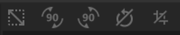

Transform
In: Tools
Description
Use the Transform tool to move, scale, or rotate your image or material.
Parameters
Basic parameters
Control Mode:
Choose whether to display parameters to control the transform with sliders in addition to the 2D view handles.With Widget & Parameters selected the following additional controls will appear:
Safe Transform: toggle
Enable or disable safe transformations. When enabled, the transform node will maintain tiling and avoid losing pixel detail due to small offsets and rotations. This reduces the freedom you have to control the transformation and enabling Safe Transform will hide some parameters.Keep ratio: toggle
When enabled, only one Scale parameter will be visible which controls scaling on both axes simultaneously. When disabled controls will be available to modify scale on the Horizontal and Vertical axes separately.- Scale: 0-1
Depending on if Keep ratio is enabled or disabled, 1 or 2 sliders will be available to adjust scale.
- Scale: 0-1
- Rotation; 0-360
Rotate the input within the handles. - Skew: -1 to 1
Skew the input within the handles on the horizontal and vertical axes.
- Position Offset: -1 to 1
Offset the transform from the starting position on the horizontal and vertical axes. - Flip Horizontal: toggle
Mirror the input horizontally - Flip Vertically: toggle
Mirror the input vertically
Advanced parameters
- Transformation:
Adjust the transformation of the handles with sliders instead of in the 2D view.- Scale X: 0-2
- Skew Vertical: -7.44 to 2
- Skew Horizontal: 0-1
- Scale Y: 0 - 13.15
- Deactivate Transform per Channel: toggle
When enabled, additional controls will appear that allow you to deactivate this transform for each channel.
Usage Guide
Click the Transform tool to add a new Transform filter layer to the top of the layer stack.
Creating or selecting a Transform filter layer automatically opens the 2D view. With the Transform layer selected, a Toolbar appears at the top of the 2D view.
Functionality
Move
To move the layer:
- Hover your mouse within the transform box
- Your cursor will change into four arrows
- Click and drag to move the transform box.
Scale
To scale the layer:
- Hover your mouse over one of the handles at the edge or corner of the transform box
- Your cursor will change into four arrows.
- Click and drag to scale the transform box.
Handles on the corner of the transform box will allow you to scale in two dimensions at once, while handles at the edge of the transform box will limit you to scaling in one dimension.
Rotate
To rotate the layer:
- Hover your mouse outside the transform box but within the 2D view.
- A small horizontal arrow will appear next to your cursor.
- Click and drag to rotate the transform box.
You can change the center of rotation by dragging the small circle at the center of the transform box. The transform box always rotates around this circle.
Toolbar

The toolbar contains the following shortcuts:
- Make it square: Adjust the scaling of the current transformation to make it square.
- Rotation +90° (to the right): clockwise 90° rotation.
- Rotation -90° (to the left): anticlockwise 90° rotation.
- Reset rotation center: Reset the rotation center to the center of the Transform box.
- Reset transformation: Reset the Transform tool to its default position.